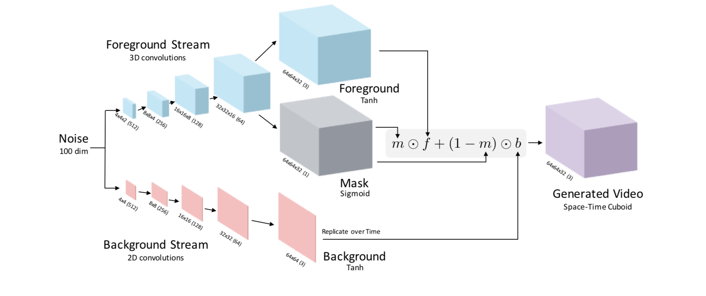

Fig.1 - The Video GAN model architecture implemented based on the original paper (image source from https://arxiv.org/pdf/1609.02612.pdf).
Notice this architecture generates videos from a low-dimensional latent vector. Video GAN instead uses an encoder to condition
the network on the input image.
Architecture Design
Figure 1 illustrates the architecture design implemented where the only difference is the input of the network.
Since we want the GAN to predict future images conditioned on some input image, an encoder was appended to the front
of the network and fed forward to both streams. The encoder takes in as input compressed images of size (3, 64, 64)
and is composed of 2D convolutional layers which outputs a tensor of size (512, 4, 4). This tensor is then input through
the background stream composed of 2D transpose convolutional layers.
The background stream learns the background of the training videos, while the foreground stream learns the dynamical component of the of the training data. Note that the input shape of the
foreground stream is a 4 dimensional tensor for a single input image. The output of the encoder is replicated along the
dimension of length 1 to remain consistent.
Lastly, the mask m(z) is intended to be a normalized tensor that
places weights on whether to choose the foreground stream or background stream for the generated video. It is clear to see
that if all the elements in m(z) are one, then the foreground stream is chosen to generate the video and vice versa.
Data
Choosing an interesting and fun dataset to use for training and testing was quite challenging. Given the limited
compute resources, it was critical to choose a dataset that captured enough movement in a relatively short amound of time.
Furthermore, it was necessary to have a large and diverse dataset. Eventually, I decided to collect my own data by webscraping
videos on YouTube. More specifically, I scraped baskebtall highlight videos. Highlight videos contain short valuable
clips over several different teams, and in general, display a close up shot of the player handling the ball. As mentioned earlier,
I limited the total training dataset to about 8 minutes worth of video, which is relatively small for the desired task.
Training
The most challenging aspect of this application is training the GAN and choosing the loss function. The formulated
optimization problem forces an iterative appraoch between optimizing the discriminator k times for every optimization
step of the generator. Choosing k is nontrivial, but a general value is 2-3. Additionally, simply penalizing generator whenever it doesn't fool
the discriminator fails to capture the dynamics of the video since we want the generated output to be correlated to the
conditioned image. Therefore, the generator's loss function is composed of the afromentioned metric, a regularized term that
takes the absolute average difference of a randomly selected frame of both the real video and generated video (same index),
and a final term that penalizes the generator if it generates similar frames (i.e. perturbations) of the conditioned image.
The final major training challenges is deciding at what fps the frames will be extracted from each video which consists of
32 frames. I decided to train 5 different models ranging from 2, 5, 10, 20, and 30 fps.